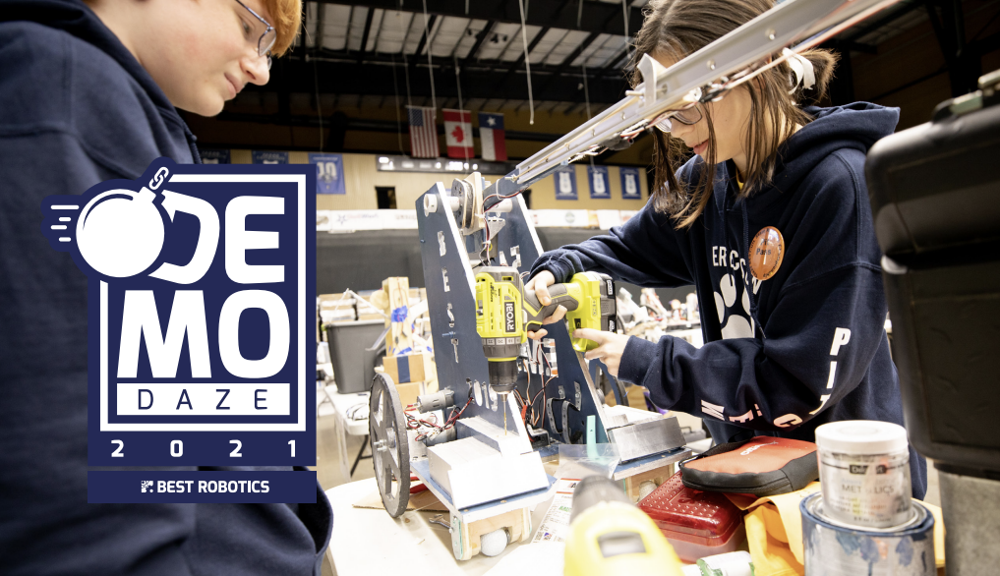
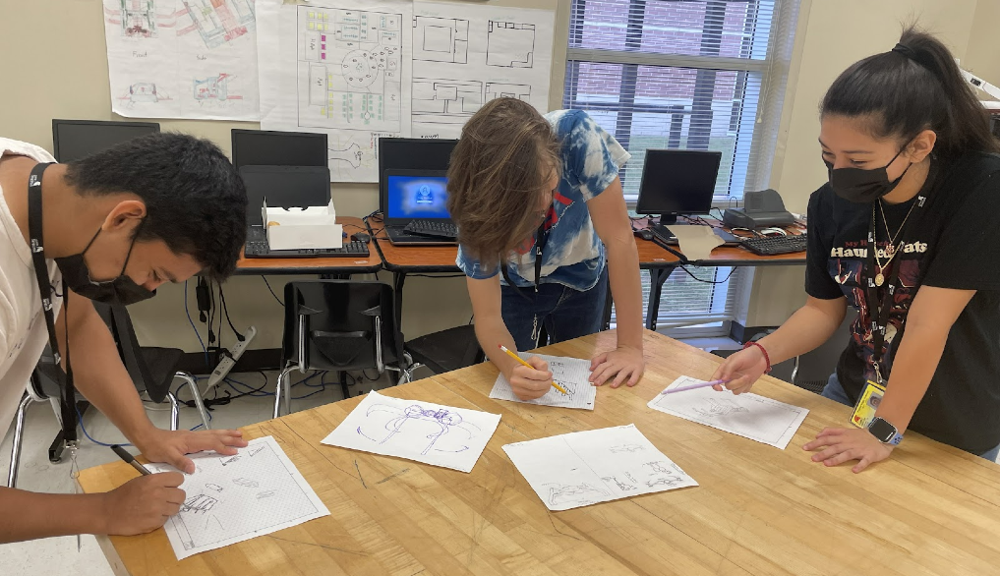
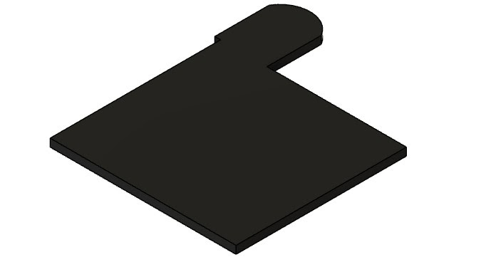
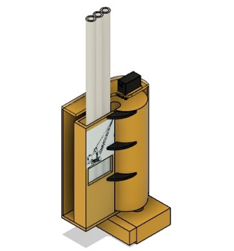
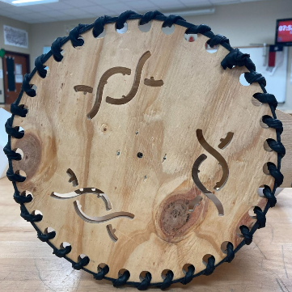
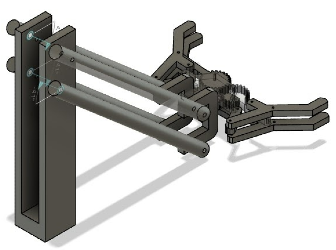
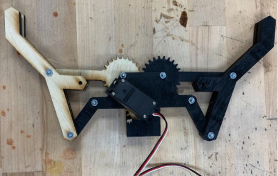
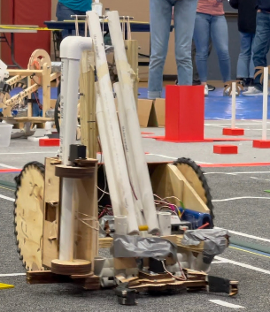

Demo Daze
BEST Robotics' 2021-22 competition, focusing on the task of performing the tasks required for safe and organized demolition.
When being presented with a new challenge by the officials at BEST Robotics Inc, the engineers of Spartan Robotics Incorporated began to create a solution that would be capable of successfully performing the tasks that were required by the Demo Daze challenges. We introduce you to Rubble, a demolition robot featuring several functions used to demolish any building safely and responsibly.


The design that we ultimately chose in the design of our robot was the U-Shape. With this decision, our engineers were able to conclude that this design had great mobility allowing it to traverse the game field with more controllability, disrupting trees to be less likely. Also, this design provided more space to work with and the ability to mount items in the back of the robot. On top of this, the U-Shape design also provided better weight distribution, allowing for a more stable and efficient design.

Our final light pole magazine design is the result of all our previous ideas of using this magazine-like container to store our pipes so they can be put into the light posts. It is a c-shaped box with a rubber band connected across the missing sidewall. The light poles can be loaded into this box and the rubber band will push them out into a rotating cylinder, which is driven by a servo. There is a light pole-shaped hole cut out of the cylinder that rotates, which fits the pole like a lock and key. After a light pole gets pushed in, it rotates 90 degrees and falls due to gravity into the light pole post. There is a brace that always allows the light pole post to line up with the light pole which we call the speed cube. The newest version of this is made from plastic molded over the actual light pole base using a heat gun. It is pinched in the middle to form an hourglass shape, making the speed cube more effective and increasing the range of directions that the light pole base can be approached from.

We used some of the concepts from the previous year to help with the brainstorming process for the development of our wheels. This helped us get the idea for the final concept of our design but we still had to factor in if our designs could easily traverse throughout the game field and all the obstacles that were in the way. So we decided to create a type of wheel that is ten inches in diameter with a rubber spiral going across the outside. This allows us to easily move through the game field without having to worry about all the different types of obstacles that would be in our way.

During the design process, we combined the concept of a scissor lift and a design from one of the previous years, a four-bar lift (pictured to the right), to create the basis for our final design of the lift. While we were creating the design we had to factor in the amount of force needed and how we would accomplish this. The maximum lifting forces required would be determined by measuring the heaviest objects in the game that required lifting. Once we calculated the amount of force needed it was decided that the lift needed to consist of two bars rather than the previous four, which allows for less force.

The intake design we ended up using was the Claw. This claw was inspired by the VEX Robotics claw due to the gear ratios present having enough torque to lift the pipe bundle using the servo provided to the team. This ended up being the intake of our choice as it provided the most maneuverability, it was the most lightweight and it could lift all of the required game pieces for our strategy.

From the beginning, I believed Rubble was a great fit for my company. My partners were extremely unsure and needed some real convincing, but after lengthy, reassuring meetings with Dozer Inc., they broke. This sounds negative, but it has since been the best investment my company has made. Rubble is a super productive aspect of our companies workflow and has done anything but let us be done!
Dan is impressed! Rubble exceeded our expectations in every category! Since the introduction of Rubble into our demolition program, there have been zero worker injuries and it has halved our time at the Demo site. Dozer Inc.'s Rubble is by far the largest gamechanger in the demolition industry.
This robot is legit!! We introduced Rubble to Reep's Demolition Co. recently and it's been amazing! The estimated time for project completion has decreased greatly! And our work is now more efficient than ever!